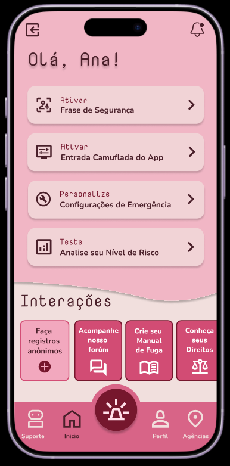
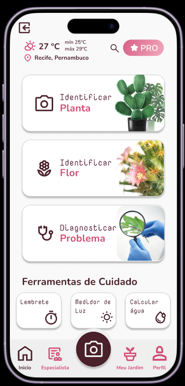
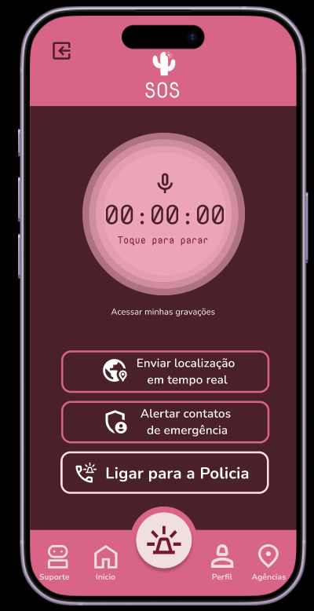
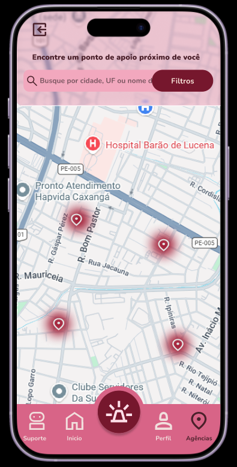

Tecnologia, proteção e acolhimento para mulheres em situação de vulnerabilidade.
O Mandacaru é um aplicativo desenvolvido para oferecer suporte, informação e recursos de segurança para mulheres que enfrentam situações de violência ou risco. Através de tecnologias discretas e intuitivas, a plataforma conecta usuárias a mecanismos de proteção, canais de denúncia e redes de apoio.
Permite enviar a localização em tempo real para contatos de confiança em situações de emergência.
Detecta palavras-chave de risco e pode acionar recursos de proteção automaticamente.
Solicita ajuda rapidamente de forma simples e discreta.
Conteúdo educativo sobre violência contra a mulher, leis e canais de denúncia.
Recursos visuais que ajudam a preservar a segurança da usuária.
Cadastro de contatos confiáveis para receber alertas e pedidos de ajuda.
| Recurso | Gratuito | Premium |
|---|---|---|
| Botão de Emergência | ✓ | ✓ |
| Reconhecimento de Voz | ✓ | ✓ |
| Conteúdo Educativo | ✓ | ✓ |
| Sem Anúncios | ✗ | ✓ |
| Reconhecimento Facial | ✗ | ✓ |
| Mais Opções de Disfarce | ✗ | ✓ |
| Recursos Avançados de Proteção | ✗ | ✓ |

A tela inicial apresenta todas as funcionalidades principais do Mandacaru de forma intuitiva e acessível. A usuária pode rapidamente acessar o botão de emergência, visualizar seus contatos de confiança e acessar recursos de informação e apoio.
O recurso de disfarce permite que o aplicativo apareça como um aplicativo comum na tela inicial do celular. Uma funcionalidade essencial para preservar a privacidade e segurança da usuária, permitindo que ela mantenha o aplicativo oculto de olhares indesejados.


A tela SOS é acionada em momentos de emergência. Com apenas um toque, o botão envia alertas para contatos de confiança, compartilha localização em tempo real e documenta o incidente. Uma resposta rápida e eficaz para momentos críticos.
Permite compartilhar a localização em tempo real com contatos de confiança e facilitar ações rápidas em situações de emergência. Além de indicar locais que possam ser úteis para as vitimas, como hospitais e delegacias.

O Mandacaru foi criado para que nenhuma mulher se sinta sozinha diante de uma situação de violência. Acreditamos que a tecnologia pode ser uma aliada poderosa na construção de um ambiente mais seguro, acolhedor e acessível para todas.
Ver Protótipo Conheça formas de apoiar o projeto